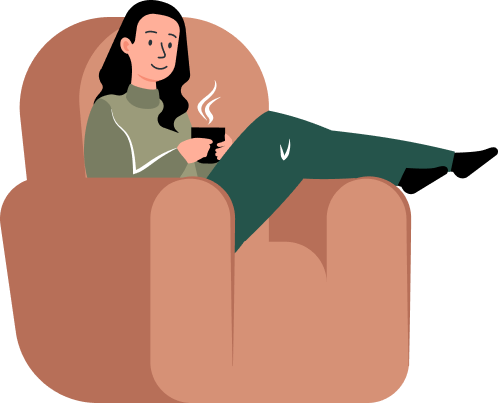

COA
DOR
O café com amor.

QUEM SOMOS?
Descubra o que torna a COADOR tão única, o nosso compromisso de conexão humana e café de qualidade, as nossas cafeterias acolhedoras e os cafés deliciosos que pode desfrutar em casa.
O que a gente quer é levar o café de melhor qualidade para você com preço justo e valorizando a história da nossa gente, que tem os pés fincados no chão. Todos os nossos produtos estão acima de 84 pontos, com pontuação baseada nas regras internacionais da associação mundial de cafés especiais em grãos.
E mesmo que você ainda não saiba o que essa nota quer dizer, a explosão de sabores e o cheiro do café passado na hora vão te conquistar. Conheça agora um pouco mais de cada um dos nossos produtos antes de comprar café: